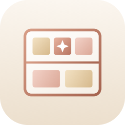

Muselleサポート
困ったときは、まず下のよくある質問をご覧ください。解決しないときは、お気軽にお問い合わせください。
tatsuma.muto@info.sunnyside-fashion.com
お使いの端末(Mac / iPhone / iPad)、OS のバージョン、Muselle のバージョン(Mac はメニューの「Muselle について」)、起きたことを書いていただけると早く調べられます。
よくある質問
ライブラリとは何ですか?
保存した画像・メモ・タグ・フォルダをまとめて入れておく「棚」です。Mac では 1 つのファイル(名前の末尾が .muselle)に見えます。iCloud Drive に置くと、同じ Apple ID の Mac・iPhone・iPad で同じライブラリを使えます。
Eagle から移れますか?
はい。Mac 版のメニュー「ファイル」→「Eagle ライブラリから読み込み…」で、Eagle のライブラリ(.library)を選んでください。画像・フォルダ・タグ・メモ・評価などを読み込みます。元の Eagle ライブラリは変更しません。
ブラウザから保存するには?
- Chrome: Muselle の拡張機能を入れると、画像の右クリック、ツールバーのボタン(ページ内の画像を選んでまとめて保存)、画像のドラッグ(保存先フォルダを選べます)で保存できます。
- Safari: Safari の「設定」→「機能拡張」で Muselle をオンにしてください。
- iPhone / iPad: 共有ボタンから「Muselle」を選びます。
Mac で Muselle が起動していてライブラリが開いていれば、保存しても Muselle は前に出ず、ブラウザのまま作業を続けられます。
拡張機能でフォルダの一覧が出ません
Muselle を起動して、ライブラリを開いてください。拡張機能を入れたり更新したりした直後は、開いていたページを再読み込みすると表示されます。ドラッグ時の表示は、ツールバーの Muselle ボタンを押した画面の一番下で入り切りできます。
iPhone に画像が出てこない
iCloud Drive の同期には少し時間がかかることがあります。Wi-Fi につながっているか、「設定」→ Apple ID →「iCloud」→「iCloud Drive」がオンになっているかをご確認ください。よく見るフォルダは、長押しして「このデバイスに保持」をオンにすると、通信がなくても開けます。
消した画像を元に戻したい
削除した画像は「ゴミ箱」に 30 日間残ります。ゴミ箱から選んで「戻す」を押してください。
ウェブの画像がリンクとして保存されました
サイトによっては、アプリからの画像の取得を断ることがあります。そのときは画像の代わりにページへのリンク(ブックマーク)として残します。
Muselle Pro について
Muselle は 300 枚まで無料で使えます。Muselle Pro(月額・年額・買い切り)にすると、保存できる数の上限がなくなります。同じ Apple アカウントなら、Mac・iPhone・iPad のどれで購入しても、すべての端末で使えます。端末を替えたときは、Muselle Pro の画面の「購入を復元」を押してください。月額・年額の解約は、App Store のアカウント設定(「サブスクリプション」)からいつでもできます。
Support
Contact: tatsuma.muto@info.sunnyside-fashion.com. Please include your device, OS version, Muselle version and what happened.
What is a library?
A single .muselle package that holds your images, notes, tags and folders. Put it in iCloud Drive to use it on all your Macs, iPhones and iPads.
Can I move from Eagle?
Yes. On the Mac choose File → Import from Eagle Library… and pick your .library. Your Eagle library is not changed.
Saving from the browser
Install the Muselle extension for Chrome (right-click an image, use the toolbar button to save several images, or drag an image onto a folder), turn it on in Safari Settings → Extensions, or use the Share button on iPhone and iPad.
Deleted something by mistake?
Deleted items stay in the Trash for 30 days. Select them there and choose Restore.
Muselle Pro
Muselle is free for up to 300 items. Muselle Pro (monthly, yearly or one-time purchase) removes the limit on every Mac, iPhone and iPad signed in to the same Apple Account. On a new device, open Muselle Pro and choose Restore Purchases. You can cancel a subscription at any time in your App Store account settings (Subscriptions).